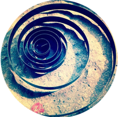

Muy lejos, más allá de las montañas de palabras, alejados de los
países de las vocales y las consonantes, viven los textos simulados.
USER INTERFACE DESIGN
Wireframing
Prototyping
Usability Testing
CONCEPT AND IDEAS
Conceptualization
Digital Branding
Product Strategy
DESIGN AND BRANDING
Interaction Design
Graphic Design
Identity Design
Work
Muy lejos, más allá de las montañas de palabras, alejados de los países
de las vocales y las consonantes, viven los textos simulados. Viven aislados
en casas de letras.
Nombre del Proyecto
x
Nombre del Proyecto
Nombre del Proyecto
Nombre del Proyecto
Nombre del Proyecto
Nombre del Proyecto
Nombre del Proyecto
Nombre del Proyecto
Nombre del Proyecto

The team
Muy lejos, más allá de las montañas de palabras, alejados de los países de las vocales
y las consonantes, viven los textos simulados. Viven aislados en casas de letras, en la
costa de la semántica, un gran océano de lenguas.